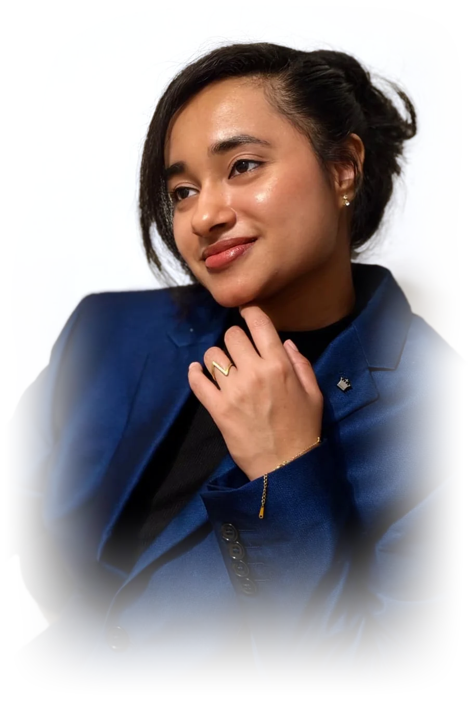
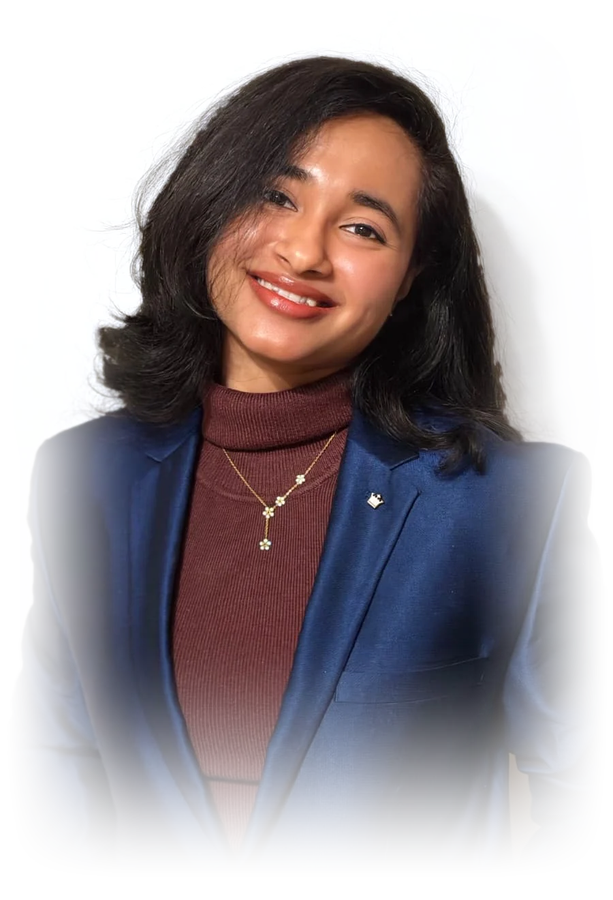
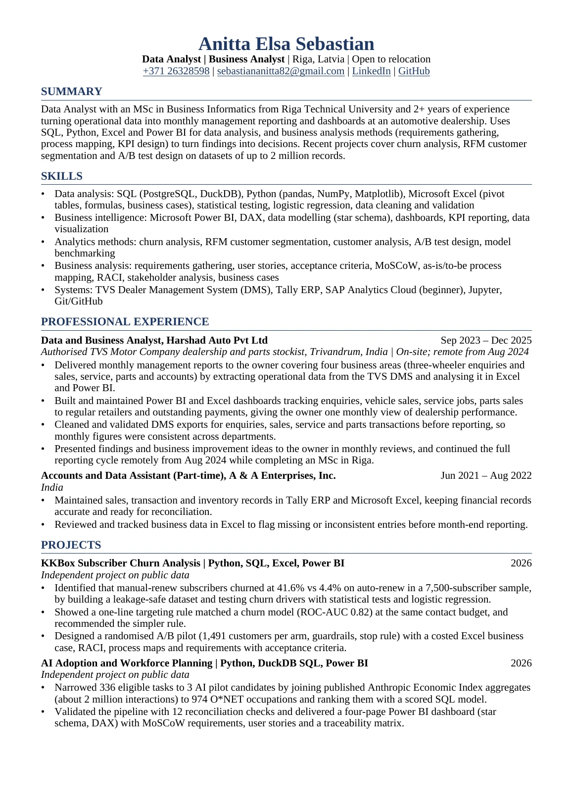
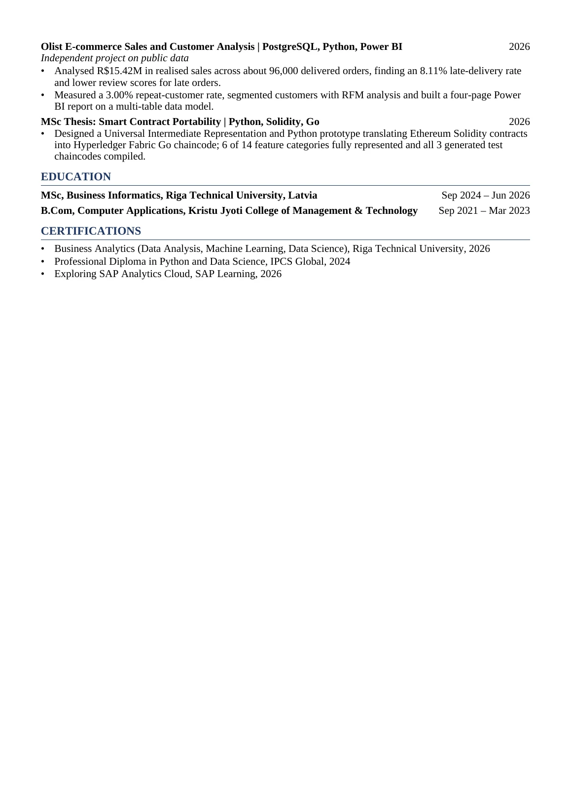

I'm Anitta, a data and business analyst with an MSc in Business Informatics from Riga Technical University (2026) and a B.Com in Computer Applications.
At Harshad Auto (2023–2025) I prepared the company's business data, maintained its dashboards and presented findings and improvement ideas to management. Before that, at A & A Enterprises, I kept sales, transaction and inventory records in Tally and Excel.
In my own projects I look for the simplest answer that holds up. In the KKBox churn study, a one-line rule matched a churn model at the same contact budget, so I recommended the rule and designed a pilot to test it before any rollout.
AnittaFinding what the numbers say.
Deciding what to do about it.
Four analyses: three independent studies on public data and my master's thesis.
I’m looking for an on-site data or business analyst role, and I’m ready to relocate for the right team. If my work fits what you need, I’d be glad to talk.
Available now · On-site · Open to relocation
